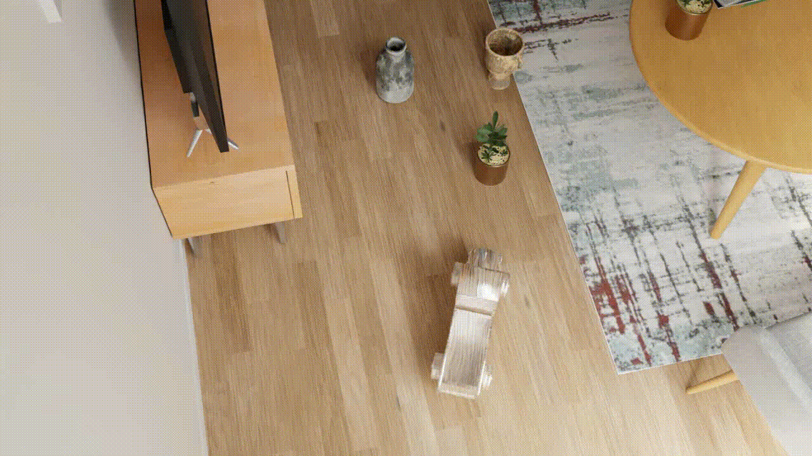
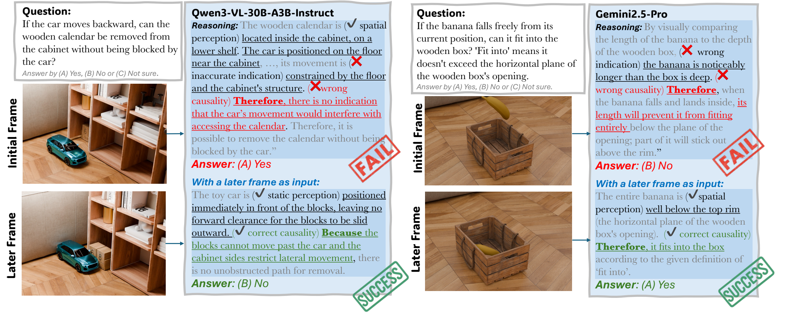
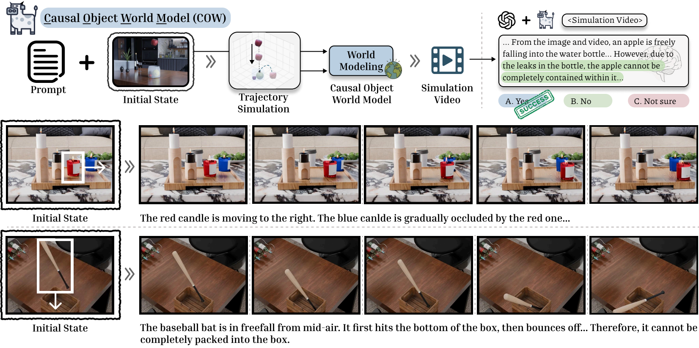
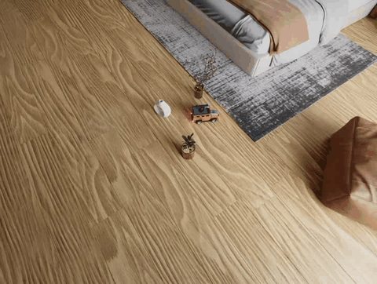
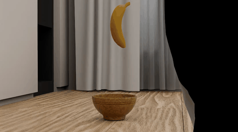
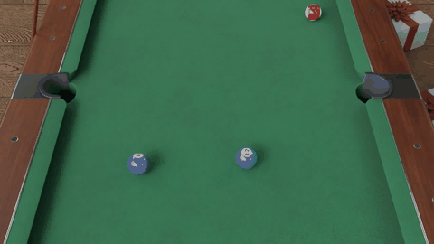
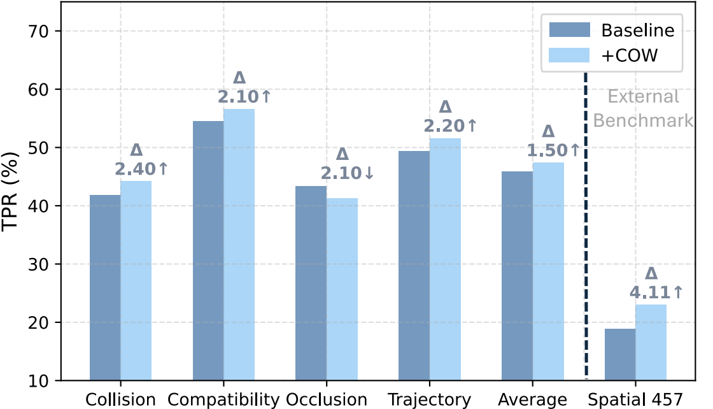

Abstract
Humans can look at a static scene and instantly predict what happens next — will moving this object cause a collision? We call this ability Causal Spatial Reasoning. However, current multimodal large language models (MLLMs) cannot do this, as they remain largely restricted to static spatial perception, struggling to answer “what-if” questions in a 3D scene.
We introduce CausalSpatial, a diagnostic benchmark evaluating whether models can anticipate consequences of object motions across four tasks: Collision, Compatibility, Occlusion, and Trajectory. Results expose a severe gap: humans score 84% while GPT-5 achieves only 54%.
Why do MLLMs fail? Our analysis uncovers a fundamental deficiency: models over-rely on textual chain-of-thought reasoning that drifts from visual evidence, producing fluent but spatially ungrounded hallucinations. To address this, we propose the Causal Object World (COW) model, a framework that externalizes the simulation process by generating videos of hypothetical dynamics. With explicit visual cues of causality, COW enables models to ground their reasoning in physical reality rather than linguistic priors. We make the dataset and code publicly available.
Benchmark Tasks
CausalSpatial covers four complementary causal spatial reasoning tasks, each probing a different aspect of physical scene understanding.

💥 Collision
Will two objects collide if one is set in motion? Models must reason about object trajectories and spatial overlap in 3D.

📦 Compatibility
Can a target object fit inside or on top of another object? Requires understanding of relative sizes and geometric compatibility.

🔭 Occlusion
Will moving an object cause another to become hidden? Tests understanding of line-of-sight and spatial blocking relationships.

🛤️ Trajectory
What path will a displaced object follow? Models must predict motion trajectories given scene geometry and physics.
Results & Analysis
Why Do MLLMs Fail?
Despite achieving impressive results on static perception benchmarks, MLLMs exhibit a fundamental deficiency on causal spatial reasoning: they over-rely on textual chain-of-thought reasoning that drifts away from visual evidence. The models produce responses that sound linguistically plausible but are spatially ungrounded — a form of hallucination specific to physical scene understanding.
Our analysis identifies two key failure modes: (1) models anchor their reasoning to object semantic categories rather than actual geometry, and (2) chain-of-thought narration compounds errors by reinforcing early incorrect spatial assumptions. This reveals that scaling language reasoning alone is insufficient — models need explicit grounding in observable physical dynamics.

Method: Causal Object World (COW)
To address this, we propose the Causal Object World (COW) model. COW externalizes the reasoning process by generating videos that simulate hypothetical physical dynamics. Instead of relying on language patterns, COW provides the model with explicit visual evidence of what would happen, enabling grounded causal reasoning.
By making the causal consequences visually observable, COW bridges the gap between static scene perception and dynamic physical reasoning, bringing model performance significantly closer to human-level accuracy.

Qualitative Examples
COW generates a short simulation video for each query. The MLLM then answers by watching the video rather than relying on text-only reasoning. Below are examples across all four task types.

💥 Collision
Q: From the car's perspective, would it bump into something if it proceeds forward?
A: (B) No

📦 Compatibility
Q: If the banana falls freely from its current position, can it fit into the wooden bowl?
A: (C) No
🔭 Occlusion
Q: If the chair moves backward by the distance of one chair, would the potted plant on the table be revealed or occluded?
A: (A) Revealed

🛤️ Trajectory
Q: If the billiard ball moves in the direction of the red arrow, will any ball go into the pocket and score?
A: (A) No
Quantitative Results

BibTeX
@article{ma2026causalspatial,
title = {CausalSpatial: A Benchmark for Object-Centric Causal Spatial Reasoning},
author = {Ma, Wenxin and Wang, Chenlong and Yuan, Ruisheng and Chen, Hao and
Dai, Nanru and Zhou, S. Kevin and Yang, Yijun and Yuille, Alan and Chen, Jieneng},
journal = {arXiv preprint arXiv:2601.13304},
year = {2026},
url = {https://arxiv.org/abs/2601.13304}
}